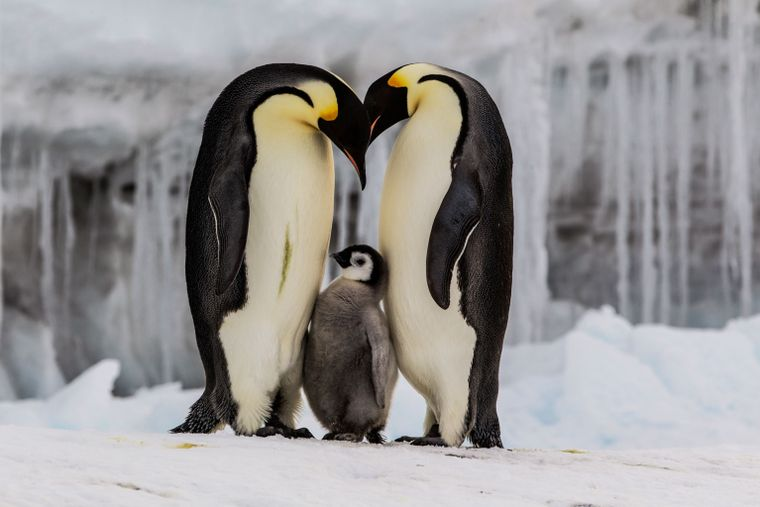

Nombre |
Caracteristicas |
Como se ve |
Pingüino Emperador |
- El pingüino emperador es la especie más grande, midiendo hasta 115 cm de altura y pesando hasta 40 kg.
- Se caracteriza por su porte imponente y su plumaje negro y blanco. Habita en las regiones más frías de la Antártida.
- Tienen una peculiar forma de reproducción, donde el macho incuba el huevo durante aproximadamente 2 meses mientras la hembra se alimenta en el mar
.
|
 |
Pingüino Azul o del Hada |
- Es la especie más pequeña, midiendo apenas 40 cm y pesando aproximadamente 1 kg
.
- Se encuentra cerca de las costas de Australia y Nueva Zelanda.
- Pasan la mayor parte de su tiempo retozando en el océano a pesar de su pequeño tamaño
|
|
Pingüino de Magallanes |
- Se caracteriza por su llamativo plumaje blanco y negro, así como por su comportamiento amigable y juguetón
- Interactúa cercana y sin temor con los seres humanos, a diferencia de otras especies
- Durante el cortejo, los machos suelen buscar guijarros y piedras para ofrecer a las hembras como muestra de afecto
|
|
Pingüino de Penacho Amarillo |
- Otra especie fascinante que no puede pasar desapercibida por sus adorables penachos amarillos
- Se encuentra principalmente en las islas subantárticas de Nueva Zelanda
- Construyen nidos elaborados con pasto y plumas para proteger a sus polluelos
|
|
Pingüino Rey |
- Es la segunda especie más grande después del pingüino emperador, pudiendo crecer hasta 90 cm de altura
- Se alimenta principalmente de peces y calamares.
- Vive en colonias numerosas en las islas subantárticas
|
|